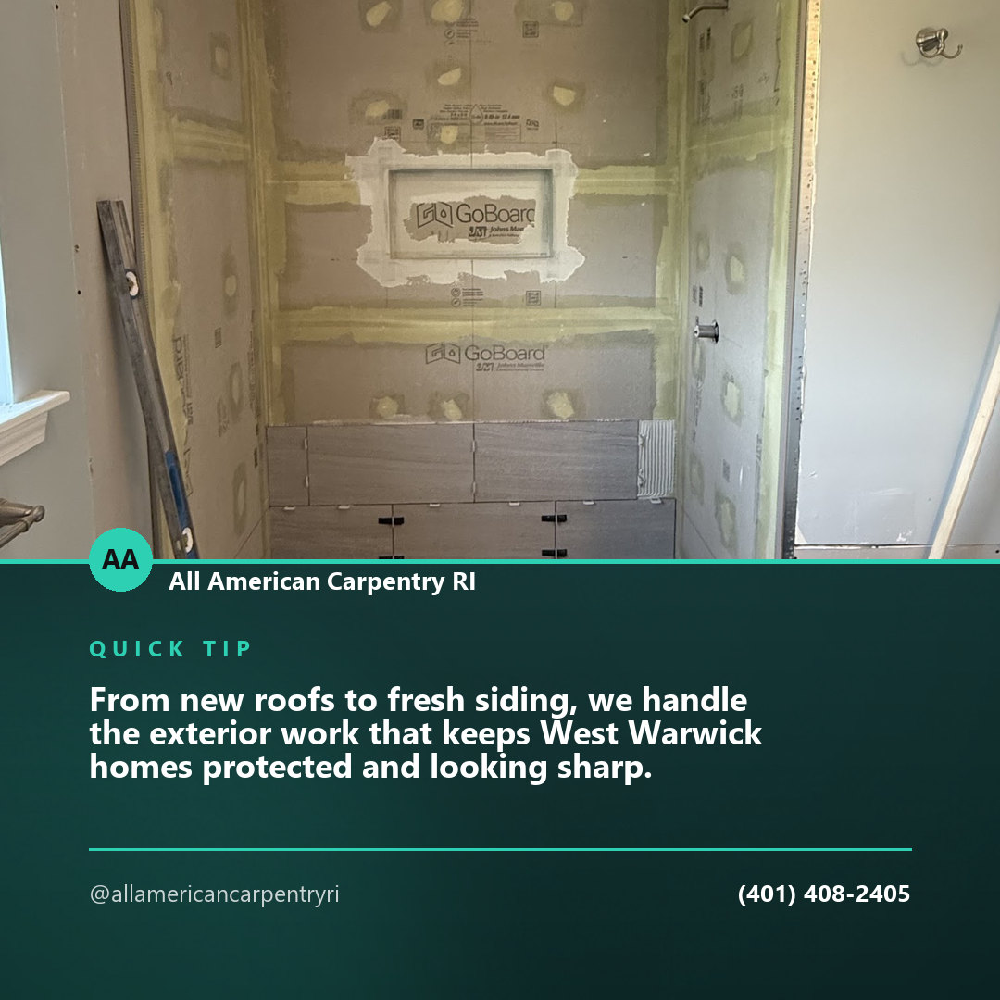
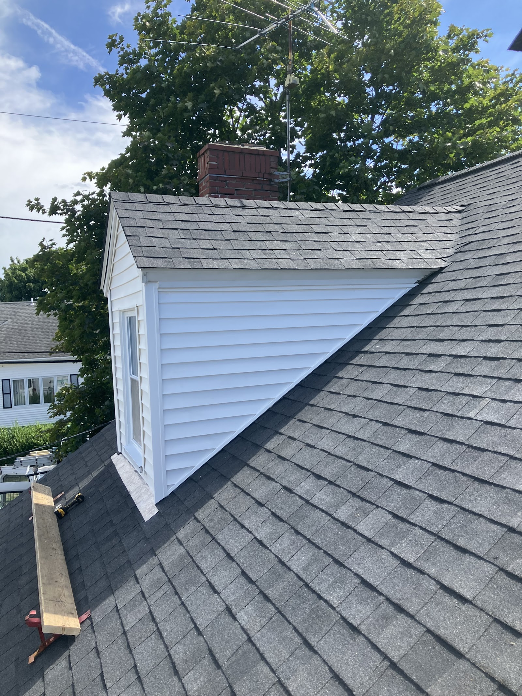
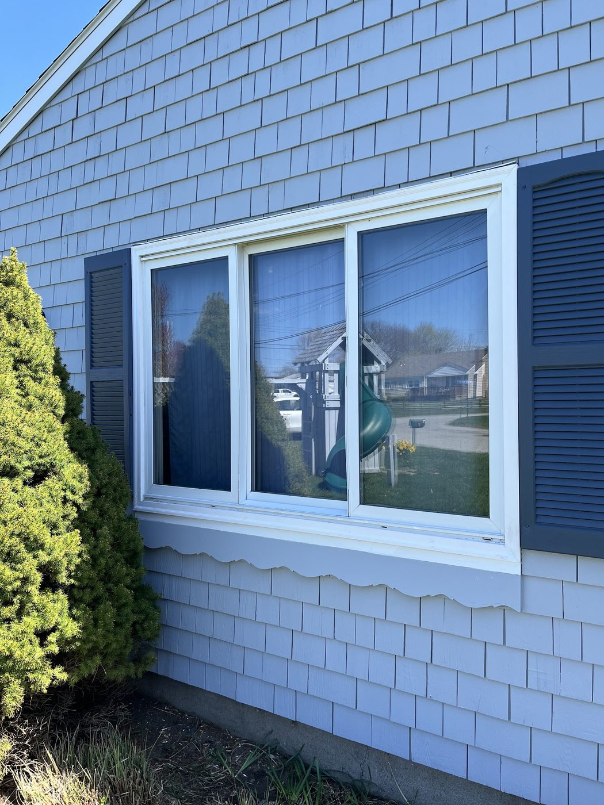
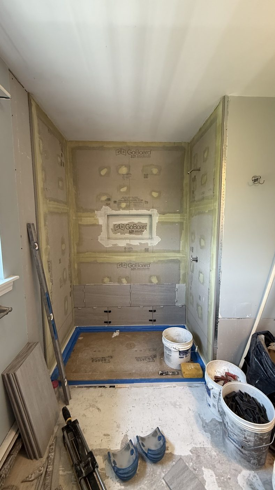
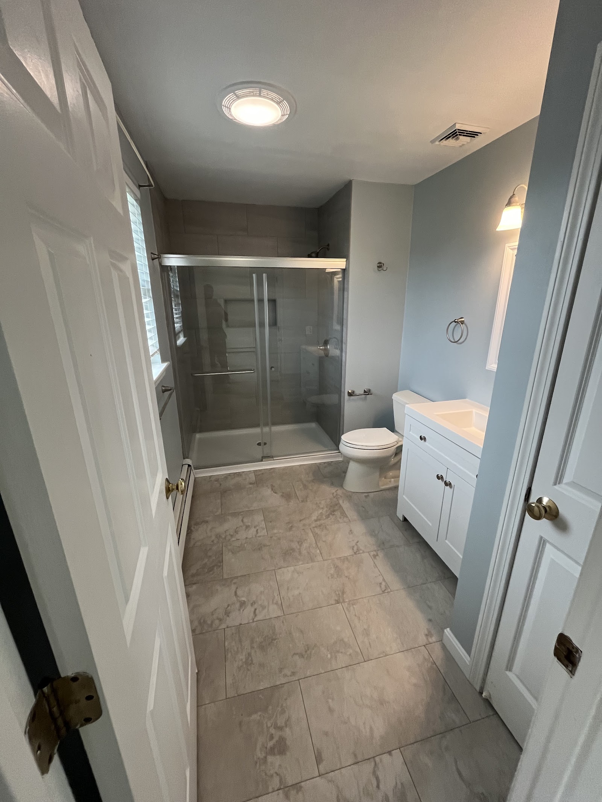

Service spotlight · Facebook
From new roofs to fresh siding, we handle the exterior work that keeps West Warwick homes protected and looking sharp. Licensed carpentry with a 5-star track record across every Google review so far.
All American Carpentry does custom carpentry and remodeling across Kent, Newport, Washington and Providence counties — framing, trim, roofing, siding and window installation, residential and commercial, from frame to finish.
Most projects pass through four or five different trades and lose something at every handoff. A carpentry shop that can take a job from the studs through the last piece of casing does not have those handoffs.
The part that gets covered up and never looked at again. Walls, floors and openings put in square and plumb, because everything after this is measured off it.
Shingles, flashing and the details around dormers and chimneys — the work that decides whether the rest of the building stays dry.
New window installations and siding — the layer that takes every Rhode Island winter and every August for the next couple of decades.
Casings, base, doors, and the joints somebody is going to be looking at every morning for years. This is the only stage anyone can actually see, so it is the one people judge the whole job by.
Roofs and windows on Rhode Island houses — the two jobs that stop being optional the moment they start leaking.


Same bathroom, two different weeks. What the homeowner remembers is the second picture; what decides whether it lasts is the first one — the waterproof board, the sealed seams and the floor under the tile, all of it buried before anybody sees a finished room.


“On time, on budget, and with no hidden costs.”
Design/build means the drawing and the building are the same conversation, so what gets designed is something that can actually be built for what you were told it would cost.
Our personalized approach ensures that every project, large or small, receives the same attention to detail. Estimates are free, for residential and commercial work alike.
Based in West Warwick and working across four Rhode Island counties. Not sure whether you're in range? Call and ask.
Tell us what you're thinking about — a room, a roof, a set of windows, or the whole thing from frame to finish. We'll come look at it and price it honestly.
(401) 408-2405Content